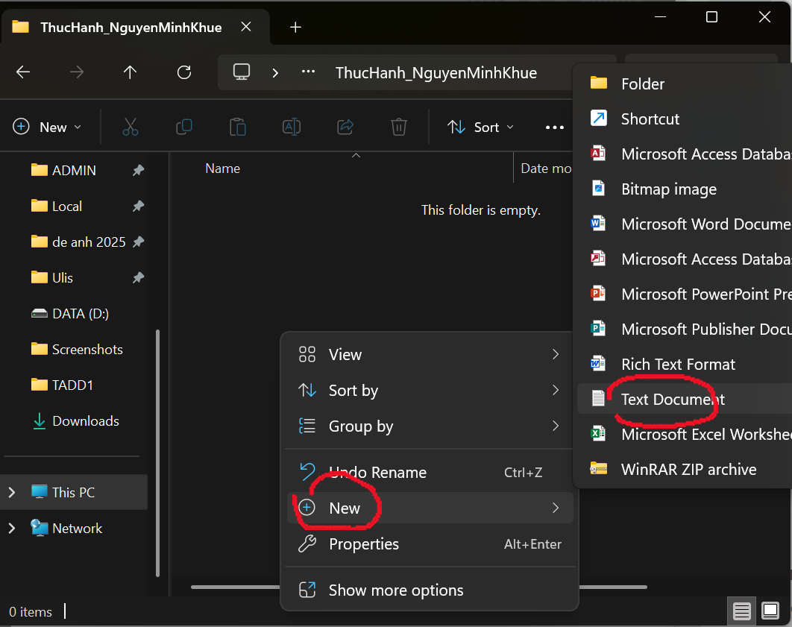
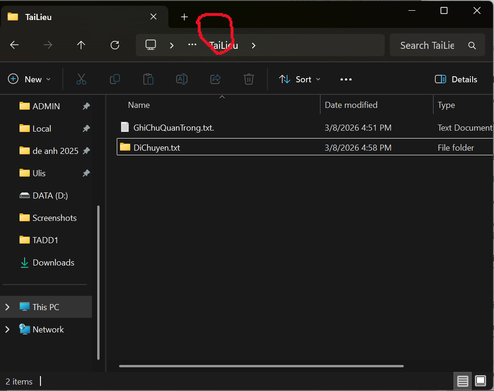
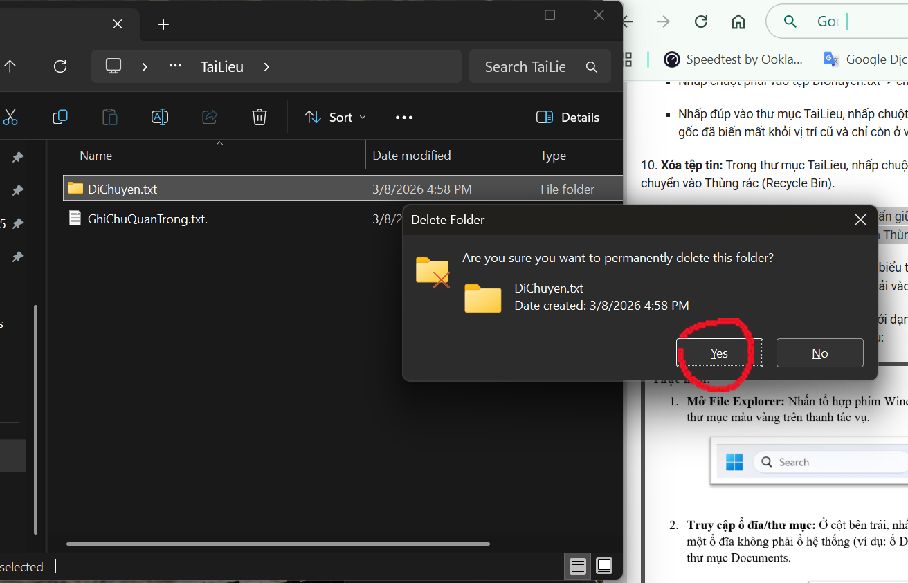
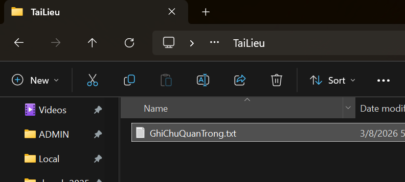

Mục tiêu
Em thực hành cách tổ chức tệp và thư mục trên Windows thay vì chỉ ghi nhớ các lệnh. Đích đến là tự tạo được một cây thư mục rõ ràng, biết sao chép, di chuyển, xóa và khôi phục tệp đúng cách.
Quá trình thực hiện
Tạo không gian thực hành
Em mở File Explorer, chọn vị trí lưu và tạo thư mục ThucHanh_NguyenMinhKhue. Việc đặt tên ngay từ đầu giúp em không nhầm thư mục bài tập với các tệp cá nhân khác.


Tạo và sắp xếp tệp
Trong thư mục chính, em tạo GhiChu.txt, đổi tên thành GhiChuQuanTrong.txt rồi thêm thư mục con TaiLieu. Sau đó em thử cả Copy/Paste và Cut/Paste để thấy rõ khác biệt giữa sao chép với di chuyển.

Xóa và khôi phục
Em xóa một tệp theo cách thông thường để đưa vào Recycle Bin, đồng thời thử Shift + Delete với tệp khác. Cuối cùng, em mở Thùng rác và khôi phục tệp đã xóa. Bước này giúp em hiểu thao tác nào còn có thể sửa sai và thao tác nào cần cân nhắc trước khi bấm.


Điều em học được
Trước bài này, em thường lưu tệp theo thói quen và tìm lại bằng thanh tìm kiếm. Sau khi tự làm đủ một vòng tạo, đổi tên, di chuyển và khôi phục, em thấy việc đặt tên nhất quán và chia thư mục từ đầu tiết kiệm thời gian hơn nhiều. Em cũng cẩn thận hơn với Shift + Delete vì thao tác đó bỏ qua Thùng rác.